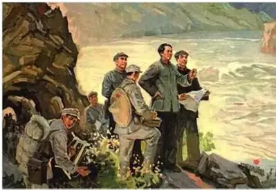

<!doctype html>
<html lang="zh-CN">
  <head>
    <meta charset="UTF-8" />
    <meta name="viewport" content="width=device-width, initial-scale=1.0" />
    <link rel="preload" href="assets/chishui-route.jpg" as="image" fetchpriority="high" />
    <title>四渡赤水 · 重走长征路</title>
    <style>
      :root {
        --color-paper: #ede4cd;
        --color-paper-deep: #ddcfa9;
        --color-ink: #2a2420;
        --color-ink-soft: #55493c;
        --color-red: #9c231b;
        --color-red-deep: #6f1712;
        --color-gold: #a9793f;
        --font-serif: "Noto Serif SC", "Songti SC", serif;
        --font-sans: "Noto Sans SC", "PingFang SC", sans-serif;
        --radius: 3px;
      }

      * { box-sizing: border-box; }
      html, body { margin: 0; padding: 0; width: 100%; height: 100%; }
      body {
        font-family: var(--font-sans);
        color: var(--color-ink);
        background: #1c1712;
        line-height: 1.7;
        overflow: hidden;
      }
      #app { position: fixed; inset: 0; width: 100vw; height: 100vh; overflow: hidden; }
      .hidden { display: none !important; }

      /* ---------- 通用场景 ---------- */
      .scene {
        position: absolute;
        inset: 0;
        width: 100%;
        height: 100%;
        overflow: hidden;
        background: #1c1712;
      }
      .scene__bg {
        position: absolute;
        inset: -2%;
        width: 104%;
        height: 104%;
        background-image: url("assets/chishui-route.jpg");
        background-size: cover;
        background-position: center;
        filter: sepia(0.12) saturate(0.82) contrast(1.06) brightness(0.88);
      }
      .scene__vignette {
        position: absolute;
        inset: 0;
        pointer-events: none;
        background: radial-gradient(ellipse at center, transparent 42%, rgba(0, 0, 0, 0.68) 100%);
      }

      /* ---------- 历史背景前置（与飞夺泸定桥一致） ---------- */
      .scene--intro .scene__bg { filter: sepia(0.14) saturate(0.8) contrast(1.06) brightness(0.62); }

      .history-intro {
        position: absolute;
        inset: 0;
        z-index: 25;
        display: flex;
        flex-direction: column;
        align-items: center;
        justify-content: center;
        gap: 20px;
        padding: 24px;
        background: rgba(10, 8, 6, 0.55);
        text-align: center;
      }
      .history-intro__eyebrow {
        font-family: var(--font-sans);
        font-size: 0.85rem;
        letter-spacing: 0.15em;
        color: rgba(237, 228, 205, 0.78);
        margin: 0;
      }
      .history-intro__title {
        font-family: var(--font-serif);
        font-size: clamp(2rem, 6vw, 3rem);
        color: var(--color-paper);
        letter-spacing: 0.12em;
        margin: 0;
        text-shadow: 0 2px 16px rgba(0, 0, 0, 0.6);
      }
      .history-intro__text {
        max-width: 640px;
        color: rgba(237, 228, 205, 0.92);
        font-size: 1rem;
        line-height: 1.95;
        margin: 0;
      }
      .primary-btn {
        margin-top: 8px;
        padding: 13px 34px;
        font-family: var(--font-sans);
        font-size: 1rem;
        font-weight: 700;
        letter-spacing: 0.05em;
        color: var(--color-paper);
        background: var(--color-red);
        border: none;
        border-radius: 6px;
        cursor: pointer;
        box-shadow: 0 8px 22px rgba(0, 0, 0, 0.4);
        transition: background-color 0.15s ease, transform 0.15s ease;
      }
      .primary-btn:hover { background: var(--color-red-deep); transform: translateY(-2px); }
      .ghost-btn {
        margin-top: 4px;
        padding: 9px 22px;
        font-family: var(--font-sans);
        font-size: 0.88rem;
        font-weight: 700;
        color: rgba(237, 228, 205, 0.92);
        background: transparent;
        border: 1px solid rgba(248, 230, 168, 0.4);
        border-radius: 6px;
        cursor: pointer;
        transition: border-color 0.15s ease, background-color 0.15s ease;
      }
      .ghost-btn:hover { border-color: rgba(242, 201, 76, 0.75); background: rgba(156, 35, 27, 0.25); }

      /* ---------- 拖动关卡场景 ---------- */
      .scene--play .scene__bg { filter: sepia(0.12) saturate(0.82) contrast(1.06) brightness(0.9); }
      .scene__scrim {
        position: absolute;
        inset: 0;
        pointer-events: none;
        background: linear-gradient(
          180deg,
          rgba(10, 8, 6, 0.55) 0%,
          rgba(10, 8, 6, 0.06) 24%,
          rgba(10, 8, 6, 0.04) 62%,
          rgba(10, 8, 6, 0.62) 100%
        );
      }

      .level-panel {
        position: absolute;
        top: 3.4%;
        left: 50%;
        transform: translateX(-50%);
        z-index: 20;
        width: min(680px, 92vw);
        text-align: center;
        color: var(--color-paper);
        text-shadow: 0 2px 10px rgba(0, 0, 0, 0.8);
      }
      .level-panel__step {
        font-family: var(--font-sans);
        font-size: 0.78rem;
        letter-spacing: 0.28em;
        color: #f2c94c;
        margin: 0 0 6px;
      }
      .level-panel__title {
        font-family: var(--font-serif);
        font-size: clamp(1.3rem, 4vw, 1.8rem);
        margin: 0 0 6px;
        letter-spacing: 0.06em;
      }
      .level-panel__meta {
        font-family: var(--font-sans);
        font-size: 0.82rem;
        color: rgba(237, 228, 205, 0.82);
        margin: 0 0 8px;
      }
      .level-panel__desc {
        font-family: var(--font-serif);
        font-size: 0.96rem;
        line-height: 1.75;
        margin: 0 auto;
        max-width: 620px;
      }

      /* 进度点 */
      .progress-dots {
        position: absolute;
        left: 50%;
        bottom: 4.5%;
        transform: translateX(-50%);
        z-index: 20;
        display: flex;
        gap: 12px;
        align-items: center;
      }
      .progress-dots__item {
        width: 40px;
        height: 5px;
        border-radius: 999px;
        background: rgba(237, 228, 205, 0.28);
        transition: background-color 0.3s ease;
      }
      .progress-dots__item--done { background: #f2c94c; }
      .progress-dots__item--active { background: var(--color-red); box-shadow: 0 0 12px rgba(156, 35, 27, 0.8); }

      /* 目标落点环 */
      .drop-target {
        position: absolute;
        z-index: 12;
        width: 150px;
        height: 150px;
        transform: translate(-50%, -50%);
        display: flex;
        align-items: flex-end;
        justify-content: center;
        border-radius: 50%;
        border: 2px dashed rgba(242, 201, 76, 0.9);
        background: radial-gradient(circle, rgba(156, 35, 27, 0.22) 0%, rgba(156, 35, 27, 0.05) 60%, transparent 72%);
        animation: target-pulse 1.5s ease-in-out infinite;
        pointer-events: none;
      }
      .drop-target__flag {
        position: absolute;
        top: -14px;
        left: 50%;
        transform: translateX(-50%);
        white-space: nowrap;
        font-family: var(--font-serif);
        font-size: 0.82rem;
        font-weight: 700;
        color: #fff6d6;
        background: rgba(111, 23, 18, 0.9);
        border: 1px solid rgba(242, 201, 76, 0.6);
        padding: 3px 12px;
        border-radius: 999px;
        text-shadow: none;
      }
      .drop-target--hit {
        border-color: #f2c94c;
        background: radial-gradient(circle, rgba(242, 201, 76, 0.35) 0%, transparent 70%);
        animation: none;
      }

      @keyframes target-pulse {
        0%, 100% { transform: translate(-50%, -50%) scale(1); opacity: 0.85; }
        50% { transform: translate(-50%, -50%) scale(1.08); opacity: 1; }
      }

      /* 红军拖动标志 */
      .marker {
        position: absolute;
        /* 位置由 JS 用 left/top 百分比设置，transform 使其以“中心点”对齐坐标 */
        left: 11%;
        top: 85%;
        transform: translate(-50%, -50%);
        z-index: 18;
        width: 128px;
        cursor: grab;
        touch-action: none;
        user-select: none;
        filter: drop-shadow(0 12px 16px rgba(0, 0, 0, 0.55));
        animation: marker-glow 1.6s ease-in-out infinite;
      }
      .marker img {
        width: 100%;
        display: block;
        border-radius: 6px;
        border: 2px solid rgba(242, 201, 76, 0.7);
        pointer-events: none;
        user-select: none;
      }
      .marker__caption {
        position: absolute;
        top: -22px;
        left: 50%;
        transform: translateX(-50%);
        white-space: nowrap;
        font-family: var(--font-sans);
        font-size: 0.74rem;
        font-weight: 700;
        color: #fff6d6;
        background: rgba(20, 15, 10, 0.75);
        padding: 2px 10px;
        border-radius: 999px;
      }
      .marker--dragging { cursor: grabbing; animation: none; }
      .marker--locked { animation: none; cursor: default; filter: drop-shadow(0 0 14px rgba(242, 201, 76, 0.6)) drop-shadow(0 12px 16px rgba(0, 0, 0, 0.55)); }

      /* 只动 filter，不动 transform，避免与居中定位冲突 */
      @keyframes marker-glow {
        0%, 100% { filter: drop-shadow(0 12px 16px rgba(0, 0, 0, 0.55)); }
        50% { filter: drop-shadow(0 12px 18px rgba(0, 0, 0, 0.6)) drop-shadow(0 0 12px rgba(242, 201, 76, 0.4)); }
      }

      .play-hint {
        position: absolute;
        left: 50%;
        bottom: 12%;
        transform: translateX(-50%);
        z-index: 16;
        font-family: var(--font-sans);
        font-size: 0.9rem;
        color: rgba(237, 228, 205, 0.95);
        text-shadow: 0 1px 8px rgba(0, 0, 0, 0.85);
        pointer-events: none;
      }

      .toast {
        position: absolute;
        left: 50%;
        top: 46%;
        transform: translate(-50%, -50%);
        z-index: 40;
        text-align: center;
        font-family: var(--font-serif);
        font-size: clamp(1.3rem, 5vw, 1.9rem);
        font-weight: 700;
        color: #fff6d6;
        background: rgba(39, 48, 31, 0.94);
        border: 1px solid rgba(186, 168, 92, 0.52);
        border-left: 4px solid #baa85c;
        border-radius: 7px;
        text-shadow: 0 2px 14px rgba(0, 0, 0, 0.9);
        opacity: 0;
        transition: opacity 0.35s ease;
        pointer-events: none;
        padding: 10px 20px;
      }
      .toast--show { opacity: 1; }
      .toast--error {
        color: #fff0e9;
        background: rgba(66, 24, 20, 0.94);
        border-color: rgba(214, 90, 73, 0.58);
        border-left-color: #d65a49;
      }

      /* ---------- 结束界面：与“飞夺泸定桥”一致的关卡页（档案卡 + 写感悟请 AI 赋诗） ---------- */
      .view-level {
        position: absolute;
        inset: 0;
        overflow-y: auto;
        background-color: var(--color-paper);
        background-image:
          radial-gradient(rgba(42, 36, 32, 0.05) 1px, transparent 1px),
          radial-gradient(rgba(42, 36, 32, 0.035) 1px, transparent 1px);
        background-size: 3px 3px, 7px 7px;
        background-position: 0 0, 2px 3px;
        color: var(--color-ink);
      }
      .view-level__inner {
        max-width: 960px;
        margin: 0 auto;
        padding: 48px 24px 96px;
      }
      .level-header {
        margin-bottom: 40px;
        padding-bottom: 24px;
        border-bottom: 1px solid rgba(42, 36, 32, 0.15);
      }
      .level-header__eyebrow {
        font-size: 0.8rem;
        letter-spacing: 0.15em;
        color: var(--color-ink-soft);
        margin: 0 0 8px;
      }
      .level-header h1 {
        font-family: var(--font-serif);
        font-size: 2.2rem;
        margin: 0 0 16px;
      }
      .level-header__debrief {
        font-family: var(--font-serif);
        font-size: 1rem;
        color: var(--color-red-deep);
        margin: 0 0 12px;
      }
      .level-header__scenario {
        color: var(--color-ink-soft);
        font-size: 1rem;
        max-width: 68ch;
        margin: 0 0 18px;
      }
      .level-header__actions {
        display: flex;
        flex-wrap: wrap;
        gap: 10px;
      }
      .level-header__actions button {
        min-height: 40px;
        padding: 9px 18px;
        color: var(--color-paper);
        background: var(--color-red);
        border: none;
        border-radius: var(--radius);
        font-family: var(--font-sans);
        font-size: 0.9rem;
        font-weight: 700;
        cursor: pointer;
      }
      .level-header__actions button:hover { background: var(--color-red-deep); }

      .dossier {
        display: grid;
        grid-template-columns: 1.1fr 1fr;
        gap: 40px;
      }
      .dossier__heading {
        font-family: var(--font-serif);
        font-size: 1.1rem;
        margin: 0 0 16px;
      }
      .card-list { display: flex; flex-direction: column; gap: 16px; }
      .archive-card {
        background: var(--color-paper-deep);
        border: 1px solid rgba(42, 36, 32, 0.18);
        border-radius: var(--radius);
        padding: 16px;
        box-shadow: var(--shadow-card);
      }
      .archive-card__title { font-family: var(--font-serif); font-size: 1rem; margin: 0 0 8px; }
      .archive-card__text { margin: 0; font-size: 0.92rem; color: var(--color-ink-soft); line-height: 1.85; }

      .dossier__inference textarea {
        width: 100%;
        font-family: var(--font-sans);
        font-size: 0.95rem;
        padding: 14px;
        border: 1px solid rgba(42, 36, 32, 0.25);
        border-radius: var(--radius);
        background: #fbf7ea;
        color: var(--color-ink);
        resize: vertical;
      }
      .poem-form-picker {
        display: flex;
        flex-wrap: wrap;
        align-items: center;
        gap: 14px;
        margin-top: 14px;
        font-size: 0.9rem;
      }
      .poem-form-picker__label { color: var(--color-ink-soft); }
      .poem-form-picker__option {
        display: inline-flex;
        align-items: center;
        gap: 6px;
        cursor: pointer;
        font-family: var(--font-serif);
      }
      #submit-reflection {
        margin-top: 14px;
        padding: 10px 24px;
        font-family: var(--font-sans);
        font-size: 0.95rem;
        font-weight: 700;
        letter-spacing: 0.05em;
        color: var(--color-paper);
        background: var(--color-red);
        border: none;
        border-radius: var(--radius);
        cursor: pointer;
        transition: background-color 0.15s ease;
      }
      #submit-reflection:hover { background: var(--color-red-deep); }
      #submit-reflection:disabled { opacity: 0.55; cursor: default; }
      .reflection-panel { margin-top: 24px; }
      .reflection-panel .loading, .reflection-panel .error {
        font-family: var(--font-serif);
        text-align: left;
        padding: 8px 0;
      }
      .reflection-panel .error { color: var(--color-red-deep); }
      .reflection-commentary { color: var(--color-ink-soft); font-size: 0.95rem; margin: 0 0 20px; line-height: 1.85; }
      .poem-card {
        padding: 24px 28px;
        background: var(--color-paper-deep);
        border: 1px solid rgba(42, 36, 32, 0.18);
        border-radius: var(--radius);
        box-shadow: var(--shadow-card);
        text-align: center;
      }
      .poem-card__form { margin: 0 0 6px; font-size: 0.8rem; letter-spacing: 0.2em; color: var(--color-red); }
      .poem-card__title { font-family: var(--font-serif); font-size: 1.2rem; margin: 0 0 16px; }
      .poem-line { font-family: var(--font-serif); font-size: 1.05rem; line-height: 2.1; margin: 0; color: var(--color-ink); }

      @media (max-width: 720px) {
        .dossier { grid-template-columns: 1fr; }
      }
    </style>
  </head>
  <body>
    <div id="app"></div>

    <script>
      const app = document.querySelector("#app");

      const INTRO = {
        eyebrow: "1935-01 至 1935-03 · 贵州 · 川南 · 云南 · 赤水河流域",
        title: "四渡赤水",
        text:
          "遵义会议后，蒋介石调集国民党军数十万重兵，企图把中央红军围歼于川黔滇边境。毛泽东指挥红军以赤水河为战场，声东击西、迂回穿插，四次渡过赤水河，牵着敌人的鼻子往返机动，在运动战中寻找战机、跳出重围——这是毛泽东军事生涯的“得意之笔”。现在，你将指挥红军，依照真实历史，在赤水河上完成四次巧妙的渡河。",
      };

      // 四关：历史中的“四渡赤水”，各有不同的渡河位置（百分比坐标对应地图图片）
      const LEVELS = [
        {
          idx: 1,
          name: "一渡赤水",
          flag: "① 一渡赤水",
          date: "1935年1月29日",
          place: "土城、元厚 · 西渡入川南",
          desc:
            "土城战斗受挫后，红军当机立断，从土城、元厚一带西渡赤水，进入川南、向扎西集结，跳出敌人预设的包围圈。",
          target: { x: 30, y: 74 },
        },
        {
          idx: 2,
          name: "二渡赤水",
          flag: "② 二渡赤水",
          date: "1935年2月18—21日",
          place: "太平渡、二郎滩 · 东返黔北",
          desc:
            "敌军重兵扑向川南，红军突然掉头东进，二渡赤水重回贵州，五日之内再占遵义、鏖战娄山关，取得长征以来最大的一次胜利。",
          target: { x: 57, y: 52 },
        },
        {
          idx: 3,
          name: "三渡赤水",
          flag: "③ 三渡赤水",
          date: "1935年3月16—17日",
          place: "茅台 · 西渡诱敌",
          desc:
            "为调动敌人，红军由茅台三渡赤水再入川南，大张旗鼓摆出北渡长江的姿态，把敌人的重兵引向西面。",
          target: { x: 44, y: 40 },
        },
        {
          idx: 4,
          name: "四渡赤水",
          flag: "④ 四渡赤水",
          date: "1935年3月21—22日",
          place: "二郎滩、太平渡 · 东渡南下",
          desc:
            "趁敌西调、后方空虚，红军神速东返，四渡赤水，随即南渡乌江、逼近贵阳、巧渡金沙江，彻底跳出了几十万敌军的重重包围。",
          target: { x: 71, y: 83 },
        },
      ];

      // 结束界面 = 与“飞夺泸定桥”最后一屏一致的“档案袋 · 碎片收集”面板（资料换成四渡赤水）
      // 结束界面 = 与“飞夺泸定桥”一致的关卡页：档案卡（历史资料）+ 写感悟请 AI 赋诗
      const ENDING = {
        eyebrow: "1935 年 1 月至 3 月 · 贵州 · 川南 · 云南 · 赤水河流域",
        title: "四渡赤水",
        debrief: "你已经指挥红军四渡赤水、跳出了几十万敌军的重围。现在，把此刻的感悟写下来吧。",
        scenario:
          "遵义会议后，中央红军以赤水河为战场，四次机动渡河，声东击西、避实击虚，在数十万敌军的围追堵截中重新争取主动，被誉为毛泽东一生的“得意之笔”。",
        cards: [
          {
            title: "战役背景",
            text: "遵义会议后，蒋介石调集国民党军数十万重兵，在川、黔、滇边境层层设防，企图把中央红军围歼于赤水河一带。红军以高度机动的运动战，展开四渡赤水。",
          },
          {
            title: "一渡赤水（1935.1.29）",
            text: "土城战斗受挫后，红军当机立断，从土城、元厚一带西渡赤水，进入川南、向扎西集结，跳出敌人预设的包围圈。",
          },
          {
            title: "二渡赤水（1935.2.18—21）",
            text: "敌军重兵扑向川南，红军突然掉头东进，二渡赤水重回贵州，五天内再占遵义、鏖战娄山关，取得长征以来最大的一次胜利。",
          },
          {
            title: "三渡、四渡赤水（1935.3.16—22）",
            text: "为调动敌人，红军由茅台三渡赤水、佯装北渡长江，把敌军重兵引向西面；随即趁虚神速东返，经二郎滩、太平渡四渡赤水，南渡乌江、逼近贵阳、巧渡金沙江，彻底跳出重围。",
          },
        ],
      };

      const POEM_FORMS = ["七律", "绝句", "词"];
      // 复用参考项目公开的 AI 赋诗云函数
      const REFLECT_URL = "https://pfkamgzktfwfotirlocd.supabase.co/functions/v1/reflect";
      const REFLECT_KEY = "sb_publishable_PPOeqkqKK93vo6ugo_zCoA_6hXrSveM";

      /* ---------------- 路由 ---------------- */
      function render() {
        renderIntro();
      }

      /* ---------------- 前置界面 ---------------- */
      function renderIntro() {
        window.parent?.postMessage({ type: "changzheng-level-phase", levelId: "sidu-chishui", phase: "briefing" }, "*");
        app.innerHTML = `
          <div class="scene scene--intro">
            <div class="scene__bg"></div>
            <div class="scene__vignette"></div>
            <div class="history-intro">
              <p class="history-intro__eyebrow">${INTRO.eyebrow}</p>
              <h1 class="history-intro__title">${INTRO.title}</h1>
              <p class="history-intro__text">${INTRO.text}</p>
              <button type="button" class="primary-btn" id="start-btn">开始行动</button>
              <p style="font-family:var(--font-sans);font-size:0.8rem;color:rgba(237,228,205,0.6);margin:2px 0 0;">
                任务：把左下角的红军标志，依据历史，逐一拖到赤水河上的正确渡口
              </p>
            </div>
          </div>
        `;
        document.querySelector("#start-btn").addEventListener("click", () => {
          window.parent?.postMessage({ type: "changzheng-level-phase", levelId: "sidu-chishui", phase: "gameplay" }, "*");
          startGame(0);
        });
      }

      /* ---------------- 拖动关卡 ---------------- */
      // 第一关的起点（左下角）；之后每一关都从上一关的渡口位置继续
      const START_POS = { x: 11, y: 85 };

      function startGame(levelIndex) {
        const level = LEVELS[levelIndex];
        // 起点：第一关在左下角，其余关卡接着上一关的终点（上一处渡口）
        const startPos = levelIndex === 0 ? START_POS : LEVELS[levelIndex - 1].target;

        const dots = LEVELS.map((_, i) => {
          const cls =
            i < levelIndex ? "progress-dots__item--done" : i === levelIndex ? "progress-dots__item--active" : "";
          return `<span class="progress-dots__item ${cls}"></span>`;
        }).join("");

        app.innerHTML = `
          <div class="scene scene--play">
            <div class="scene__bg"></div>
            <div class="scene__scrim"></div>

            <div class="level-panel">
              <p class="level-panel__step">第 ${level.idx} 关 / 共 4 关</p>
              <h2 class="level-panel__title">${level.name}</h2>
              <p class="level-panel__meta">${level.date} · ${level.place}</p>
              <p class="level-panel__desc">${level.desc}</p>
            </div>

            <div class="drop-target" id="drop-target"
              style="left:${level.target.x}%; top:${level.target.y}%;">
              <span class="drop-target__flag">${level.flag}</span>
            </div>

            <div class="marker" id="marker" style="left:${startPos.x}%; top:${startPos.y}%;">
              <span class="marker__caption">红军 · 拖我渡河</span>
              
            </div>

            <p class="play-hint">${levelIndex === 0 ? "拖动左下角的红军标志，放到闪烁的渡口位置" : "从上一处渡口，把红军拖到下一个闪烁的渡口"}</p>

            <div class="progress-dots">${dots}</div>

            <div class="toast" id="toast"></div>
          </div>
        `;

        setupDrag(levelIndex);
      }

      function setupDrag(levelIndex) {
        const marker = document.querySelector("#marker");
        const target = document.querySelector("#drop-target");
        const toast = document.querySelector("#toast");
        const hint = document.querySelector(".play-hint");

        let dragging = false;
        let solved = false;
        let offsetX = 0;
        let offsetY = 0;

        // 记录本关起点（标志中心），拖错时回弹到这里——注意不再回左下角，而是回本关起点
        const hr = marker.getBoundingClientRect();
        const homeCX = hr.left + hr.width / 2;
        const homeCY = hr.top + hr.height / 2;

        // 标志用 transform 居中，因此 left/top 表示“中心点”坐标
        function placeCenter(cx, cy) {
          marker.style.left = `${cx}px`;
          marker.style.top = `${cy}px`;
        }

        function overlaps() {
          const m = marker.getBoundingClientRect();
          const t = target.getBoundingClientRect();
          const dist = Math.hypot(
            m.left + m.width / 2 - (t.left + t.width / 2),
            m.top + m.height / 2 - (t.top + t.height / 2)
          );
          // 中心距离在目标半径内即算命中
          return dist < t.width / 2 + 12;
        }

        function showToast(text, isError, dur) {
          toast.textContent = text;
          toast.className = `toast toast--show${isError ? " toast--error" : ""}`;
          toast.dataset.feedbackTone = isError ? "error" : "success";
          toast.setAttribute("role", isError ? "alert" : "status");
          toast.setAttribute("aria-live", isError ? "assertive" : "polite");
          clearTimeout(showToast._t);
          showToast._t = setTimeout(() => { toast.className = "toast"; }, dur || 1600);
        }

        function onDown(e) {
          if (solved) return;
          dragging = true;
          // 指针捕获，后续 move/up 都锁定到这个元素，避免手指移出元素或多套监听重复触发
          try { marker.setPointerCapture(e.pointerId); } catch (_) {}
          marker.classList.add("marker--dragging");
          const r = marker.getBoundingClientRect();
          const cx = r.left + r.width / 2;
          const cy = r.top + r.height / 2;
          marker.style.transition = "";
          marker.style.position = "fixed";
          placeCenter(cx, cy); // 保持 transform 居中，left/top 即中心，切换定位不跳动
          offsetX = e.clientX - cx;
          offsetY = e.clientY - cy;
        }

        function onMove(e) {
          if (!dragging) return;
          e.preventDefault();
          placeCenter(e.clientX - offsetX, e.clientY - offsetY);
          target.classList.toggle("drop-target--hit", overlaps());
        }

        function onUp(e) {
          if (!dragging || solved) return;
          dragging = false;
          try { marker.releasePointerCapture(e.pointerId); } catch (_) {}
          marker.classList.remove("marker--dragging");

          if (overlaps()) {
            solved = true;
            // 吸附到渡口中心，并停留在这里——下一关将从这个位置继续
            const t = target.getBoundingClientRect();
            marker.style.transition = "left 0.25s ease, top 0.25s ease";
            placeCenter(t.left + t.width / 2, t.top + t.height / 2);
            marker.classList.add("marker--locked");
            target.classList.add("drop-target--hit");
            if (hint) hint.textContent = "";

            showToast(`✓ ${LEVELS[levelIndex].name} · 渡河成功`, false, 1500);

            setTimeout(() => {
              if (levelIndex + 1 < LEVELS.length) {
                // 下一关：标志从“上一处渡口”继续（由 startGame 用起点坐标渲染）
                startGame(levelIndex + 1);
              } else {
                renderEnding();
              }
            }, 1650);
          } else {
            showToast("这里不是正确的渡口，再看看历史提示", true, 1500);
            target.classList.remove("drop-target--hit");
            // 拖错回弹到本关起点（上一处渡口 / 首关的左下角）
            marker.style.transition = "left 0.3s ease, top 0.3s ease";
            placeCenter(homeCX, homeCY);
          }
        }

        marker.addEventListener("pointerdown", onDown);
        marker.addEventListener("pointermove", onMove);
        marker.addEventListener("pointerup", onUp);
        marker.addEventListener("pointercancel", onUp);
      }

      /* ---------------- 结束界面（关卡页：档案卡 + 写感悟请 AI 赋诗，模仿“飞夺泸定桥”） ---------------- */
      function renderEnding() {
        const cards = ENDING.cards
          .map(
            (c) => `
              <article class="archive-card">
                <h3 class="archive-card__title">${c.title}</h3>
                <p class="archive-card__text">${c.text}</p>
              </article>
            `
          )
          .join("");

        app.innerHTML = `
          <div class="view-level">
            <div class="view-level__inner">
              <header class="level-header">
                <p class="level-header__eyebrow">${ENDING.eyebrow}</p>
                <h1>${ENDING.title}</h1>
                <p class="level-header__debrief">${ENDING.debrief}</p>
                <p class="level-header__scenario">${ENDING.scenario}</p>
                <div class="level-header__actions">
                  <button type="button" id="replay-btn">重新走一遍</button>
                  <button type="button" id="finish-btn">完成关卡</button>
                </div>
              </header>

              <div class="dossier">
                <section class="dossier__cards">
                  <h2 class="dossier__heading">档案卡</h2>
                  <div class="card-list">${cards}</div>
                </section>

                <section class="dossier__inference">
                  <h2 class="dossier__heading">写下你此刻的感悟</h2>
                  <textarea id="reflection-input" rows="6" placeholder="经历了这一切，你有什么感想？"></textarea>
                  <div class="poem-form-picker">
                    <span class="poem-form-picker__label">选择诗词形式：</span>
                    ${POEM_FORMS.map(
                      (form, i) => `
                      <label class="poem-form-picker__option">
                        <input type="radio" name="poem-form" value="${form}" ${i === 0 ? "checked" : ""} />
                        <span>${form}</span>
                      </label>`
                    ).join("")}
                  </div>
                  <button id="submit-reflection" type="button">提交感悟，请 AI 赋诗</button>
                  <div id="reflection-panel" class="reflection-panel"></div>
                </section>
              </div>
            </div>
          </div>
        `;

        document.querySelector("#replay-btn").addEventListener("click", () => renderIntro());
        document.querySelector("#finish-btn").addEventListener("click", () => {
          window.parent?.postMessage({ type: "changzheng-level-complete", levelId: "sidu-chishui" }, "*");
        });
        document.querySelector("#submit-reflection").addEventListener("click", handleSubmit);
      }

      async function submitReflection(reflection, form) {
        const res = await fetch(REFLECT_URL, {
          method: "POST",
          headers: { "content-type": "application/json", apikey: REFLECT_KEY },
          body: JSON.stringify({ levelId: "sidu-chishui", reflection, form }),
        });
        if (!res.ok) {
          const e = await res.json().catch(() => ({}));
          throw new Error(e.error || "请求失败");
        }
        return res.json();
      }

      async function handleSubmit() {
        const input = document.querySelector("#reflection-input");
        const panel = document.querySelector("#reflection-panel");
        const button = document.querySelector("#submit-reflection");
        const form = document.querySelector('input[name="poem-form"]:checked').value;
        const reflection = input.value.trim();

        if (!reflection) {
          panel.innerHTML = `<p class="error">请先写下你的感悟</p>`;
          return;
        }

        button.disabled = true;
        panel.innerHTML = `<p class="loading">AI 正在构思……</p>`;
        try {
          const result = await submitReflection(reflection, form);
          panel.innerHTML = renderPoem(result, form);
        } catch (err) {
          panel.innerHTML = `<p class="error">生成失败：${err.message}</p>`;
        } finally {
          button.disabled = false;
        }
      }

      function renderPoem(result, form) {
        const lines = (result.poemBody || "")
          .split("\n")
          .filter((line) => line.trim())
          .map((line) => `<p class="poem-line">${line.trim()}</p>`)
          .join("");
        // 云函数返回字段可能是 poemForm 或 poomForm，做个兜底
        const poemForm = result.poemForm || result.poomForm || form;
        return `
          <p class="reflection-commentary">${result.commentary || ""}</p>
          <div class="poem-card">
            <p class="poem-card__form">${poemForm}</p>
            <h3 class="poem-card__title">${result.poemTitle || "四渡赤水"}</h3>
            ${lines}
          </div>
        `;
      }

      render();
    </script>
  </body>
</html>
